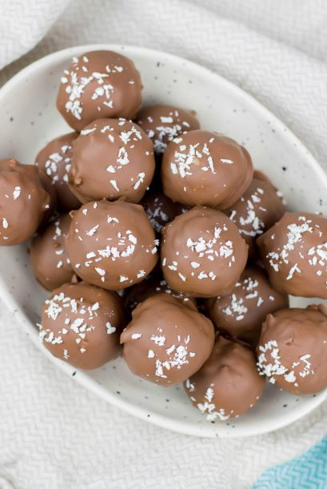

Кокосови трюфели

- 1/2 чаши подсладени кокосови люспи
- 1/2чаша кондензирано мляко
- 12 унции полусладък шоколад
- 2 супени лъжици непосладен настърган кокос
- В купа със среден размер се смесват кокосовите люспи и кондензирано
мляко
- Вземете 1 и 1/2 с.л. смес и я оформете на топче
- Поставете ги на лист за печене върху съд
- Оставете ги в хладилника около час
- Разтопете шоколада
- Извъдете кокосовите топчета и ги потопете в разтопения шоколад
- Поставете ги обратно върху хартията,като поръсите върховете с кокоса
- Оставете в хладилника за още един час преди сервиране